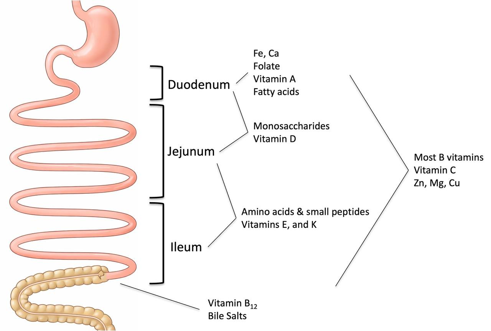
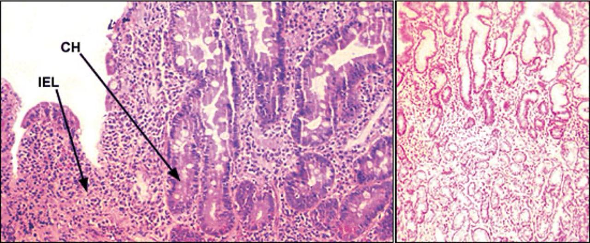
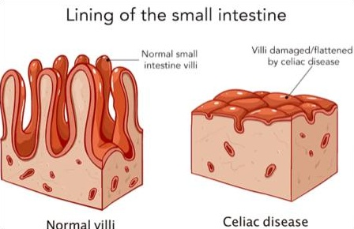

Nutrient Absorption in the Small Intestine
Pre-work
Medical Biochemistry, Chapter 30, 455-469
Lesson
Click the slide below to start the presentation:
Nutrient Absorption in the Small Intestine
"All grain is good for the food of man; as also the fruit of the vine; that which yieldeth fruit, whether in the ground or above the ground—
And all saints who remember to keep and do these sayings, walking in obedience to the commandments, shall receive health in their navel and marrow to their bones;"
— D&C 89:16, 18
Nutrient Absorption in the Small Intestine
"All grain is good for the food of man; as also the fruit of the vine; that which yieldeth fruit, whether in the ground or above the ground—
And all saints who remember to keep and do these sayings, walking in obedience to the commandments, shall receive health in their navel and marrow to their bones;"
— D&C 89:16, 18
Learning Objectives
Identify key nutrients absorbed and their locations in the small intestine
Connect clinical presentation of GI pathologies to plausible biochemical pathways
Utilize AI tools to deepen understanding of nutrient absorption in the small intestine
Review of Primary Locations for Nutrient Absorption

Image adapted from Pawlowski et al (2009) Gastroenterology 136: 1874-86
Clinical Case
A 41-year-old woman of Algerian descent, referred by her gynecologist, presented with a blood hemoglobin of 7.8 g/dL. She was on hormone therapy for endometriosis and had essentially no menstrual bleeding for the past 5 years. She followed no dietary restrictions. Her serum ferritin was unmeasurable.
The patient's only symptom was shortness of breath with exertion, and except for pallor, her examination results were normal. Iron repletion with daily ferrous sulfate supplements increased her blood hemoglobin to 12 g/dL in 1 year. She continued taking iron supplements.
Four years later, she fractured her wrist after a low-impact fall. A bone mineral density study (DEXA scan) revealed osteoporosis.
What is the most likely underlying cause of her signs and symptoms?
- Cation transporter deficiency
- Chronic hepatitis B infection
- Chronic small intestine bacteria overgrowth
- Celiac Disease
Gaps in Knowledge
Questions
Questions will appear here...
Answers
Answers will appear here...
A 41-year-old woman of Algerian descent, referred by her gynecologist, presented with a blood hemoglobin of 7.8 g/dL. She was on hormone therapy for endometriosis and had essentially no menstrual bleeding for the past 5 years. She followed no dietary restrictions. Her serum ferritin was unmeasurable.
The patient's only symptom was shortness of breath with exertion, and except for pallor, her examination results were normal. Iron repletion with daily ferrous sulfate supplements increased her blood hemoglobin to 12 g/dL in 1 year. She continued taking iron supplements.
Four years later, she fractured her wrist after a low-impact fall. A bone mineral density study (DEXA scan) revealed osteoporosis.
What is the most likely underlying cause of her signs and symptoms?
- Cation transporter deficiency
- Chronic hepatitis B infection
- Chronic small intestine bacteria overgrowth
- Celiac Disease
Clinical Case
A 41-year-old woman of Algerian descent, referred by her gynecologist, presented with a blood hemoglobin of 7.8 g/dL. She was on hormone therapy for endometriosis and had essentially no menstrual bleeding for the past 5 years. She followed no dietary restrictions. Her serum ferritin was unmeasurable.
The patient's only symptom was shortness of breath with exertion, and except for pallor, her examination results were normal. Iron repletion with daily ferrous sulfate supplements increased her blood hemoglobin to 12 g/dL in 1 year. She continued taking iron supplements.
Four years later, she fractured her wrist after a low-impact fall. A bone mineral density study (DEXA scan) revealed osteoporosis.
What is the most likely underlying cause of her signs and symptoms?
- Cation transporter deficiency
- Chronic hepatitis B infection
- Chronic small intestine bacteria overgrowth
- Celiac Disease
Case Review

IEL = intraepithelial lymphocytes | CH = crypt hyperplasia | Source: Am Fam Physician. 2002 Dec 15;66(12):2259-2266.

Why didn't she have any obvious GI symptoms?
Case Review
| Presence of Symptoms | ||
|---|---|---|
| Symptoms | Celiac Disease | Nonceliac Gluten Sensitivity |
| Intestinal | ||
| Abdominal pain, % | + (27.8) | + |
| Anorexia | + | − |
| Bloating | + | + |
| Constipation, % | + (20.2) | + |
| Diarrhea, % | + (35.3) | + |
| Flatulence | + | + |
| Lactose intolerance | + | − |
| Nausea | + | − |
| Gastroesophageal reflux | + | − |
| Weight loss | + | − |
| Vomiting | + | − |
| Presence of Symptoms | ||
|---|---|---|
| Symptoms | Celiac Disease | Nonceliac Gluten Sensitivity |
| Extraintestinal | ||
| Anemia, % | + (32) | + |
| Anxiety | + | + |
| Arthralgia, % | + (29.3) | + |
| Arthritis, % | + (1.5) | + |
| Ataxia | + | + |
| Dental enamel hypoplasia | + | − |
| Delayed puberty | + | − |
| Dermatitis herpetiformis | + | − |
| Depression | + | + |
| Elevated liver enzymes | + | − |
Prevalence in celiac disease at presentation indicated in parentheses where available.
Source: JAMA. 2017;318(7):647-656.
However, more than half the adults with celiac disease have symptoms that are not related to the digestive system, including:
- Anemia, usually from iron deficiency due to decreased iron absorption
- Loss of bone density, called osteoporosis, or softening of bones, called osteomalacia
Source: Mayo Clinic (accessed 2/23/2026)
Summary
- Adequate nutrient absorption requires:
- Proper food sources
- Digestion methods (enzymes, pH, etc.)
- Anatomical structure
- Malabsorption in the GI tract can manifest with both GI and non-GI symptoms